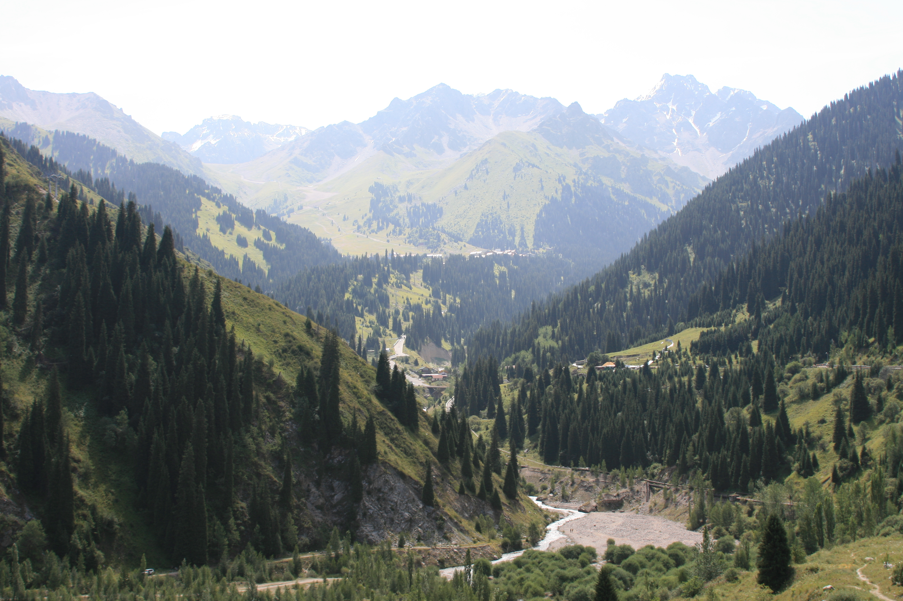

Out of frame projekt
I dette projekt skulle vi lave en plakat i A4 format, vores emne var "out of frame" og der skulle vi inkorporere et billede af os selv i denne plakat.
Research og inspiration
Under denne her opgave vidste jeg sådan set ikke helt med hvad min plakat skulle se ud, så jeg begyndte sådan set at gå på jagt efter inspiration. Efter havde søgt lidt på forskellige sider så som printerest, behance og instagram fandt jeg frem til 2 billeder som jeg godt kunne tænke mig at lave min egen version af.


Produktion af plakat
Efter jeg fandt mine inspirationskilder så gik jeg i gang med at få taget nogle af de billeder der blev brugt til disse plakater.


Efter billeder blev taget gik jeg i photoshop og fik dem billedebehandlet. Næste skridt var at finde nogle baggrund der vill passe godt ind. jeg fandt frem til denne baggrund i colorbox til mit ene billede og lavet mit andet baggrunds billeder i illustrator.

Efter at jeg fandt disse baggrunds billeder, så jeg lavede den endelige komposition i photoshop.